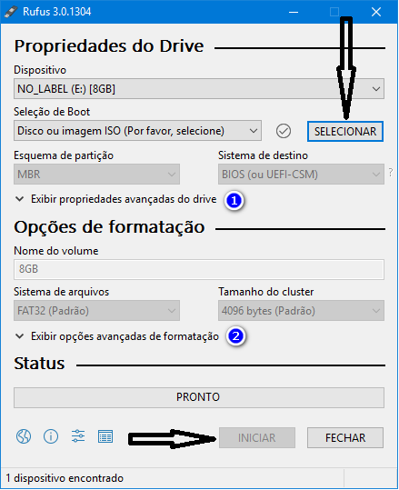
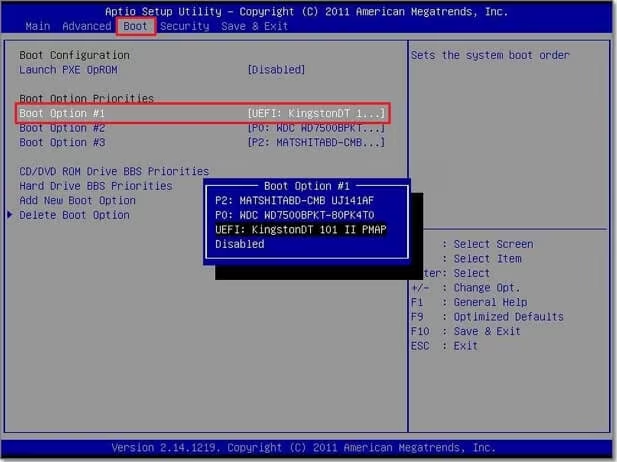

Tuturial de instalação do windows 10
- Materiais necessario: Pendrive de no minimo 8GB recomendado 16GB e o software Rufus, e aquivo Iso do
windows 10
- Primeiramente precisará transformar o pendrive em um pendrive bootavel, para isso é nescessario o Rufus
- Abra o Rufus e selecione o arquivo Iso do windows 10 que foi baixado, e de iniciar como na imagem abaixo

- Após concluir, pode retirar o pendrive e o colocar no computador que desejá formatar!
Ligue o computador/Notebook
e fique precionando a tecla F2 para acessar a BIOS e nela você irá selecionar o pendrive como prioridade maxima
ou opção 1 como na imagem abaixo

- Após o computador reiniciar clique em Instalar agora
Depois selecione a parte "Não tenho uma chave do
produto"
Selecione a verção do windows (windows 10 PRO)
- Em tipo de instalação escolha a opção de "Personalizada"
Exclua tudo dos dicos disponiveis até restar somente
um e selecione ele e clique em avançar e espere a instalação
- Após a instalação ele reiniciará automaticamente e já pode remover o pendrive
Terminou agora só
Instalar seus programas
>